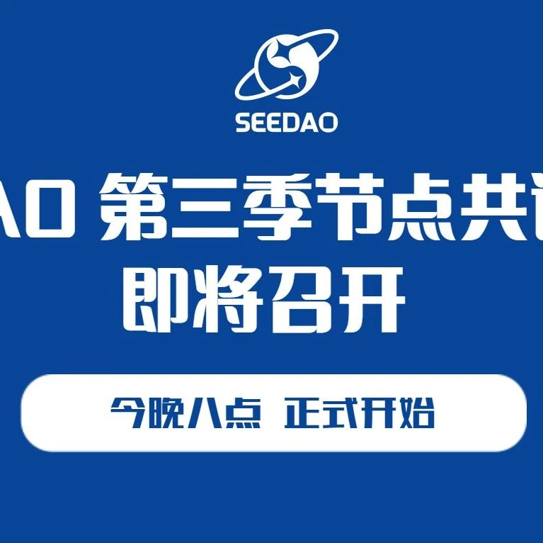

SeeDAO 第三季节点共识大会即将召开
作者: SeeDAO
SeeDAO 第三季节点共识大会将于今晚（6月2日）晚 8 点开始

SeeDAO 第三季节点共识大会将于今晚（6月2日）晚 8 点开始，会议为期三天，整体会议议程如下：
S2 市政厅工作评估马上截止，邀请各位 S3 节点对各公共岗位的工作做出评估，行使治理挖矿的权利职责，并投出宝贵的一票。
🔗 SIP-81：第二季市政厅工作评估 - 内部治理条线https://forum.seedao.xyz/thread/sip-81-44437
🔗 SIP-82：第二季市政厅工作评估 - 对外品牌条线https://forum.seedao.xyz/thread/sip-82-44438
🔗 SIP-83: 第二季市政厅工作评估 - 技术条线https://forum.seedao.xyz/thread/sip-83-44439
SeeDAO 市政厅是负责内部治理、对外品牌以及技术运营的综合性公共服务机构。第三季市政厅也即将由本届节点共识大会选举产生！目前本季市政厅全部岗位的竞选演讲已完成，欢迎到 Notion 查看：https://seedao.notion.site/38048276da854e7f946135e867948b63岗位竞选投票将于已于 6.2 开启投票，至周末晚上第二轮会议结束为止，邀请各位 S3 节点对候选人进行了解和评估，行使治理挖矿的权利职责，并投出宝贵的一票 ~https://forum.seedao.xyz/thread/sip-85-seedao-44514
https://forum.seedao.xyz/thread/sip-86-seedao-44515
https://forum.seedao.xyz/thread/sip-84-seedao-44510
对标提案: https://seedao.notion.site/fc4c862f872340bf9d81b26d729ed063
提案链接: https://seedao.notion.site/807c625c23e846ac8ab48b301a2c6cd0
🔗 SIP-89：社区金库增加 Shawn 和 Ricky 为多签成员
提案链接: https://seedao.notion.site/Shawn-Ricky-4945ceaa18f74359a6c9c5ba01285de3
提案链接: https://seedao.notion.site/DAO-b1856c1d357f4f1791229ce3b6e83854
🔗 SIP-91：SeeDAO 白皮书撰写小组提案
提案链接: https://seedao.notion.site/SeeDAO-7c751b0d76654bc4abe956adf2be98f3
提案链接: https://seedao.notion.site/Web3-b3e74ec89f8644ff951e069f248360c3?pvs=4
提案链接: https://seedao.notion.site/ccb4d5105ed042e399e601d759260b81?pvs=4
以上为本季节点共识大会相关的所有重要提案，欢迎社区内的成员与社区外的朋友共同关注。同时，在此提醒各位 SeeDAO 第三季节点成员提前过目相关提案内容，为大会投票工作做好准备。